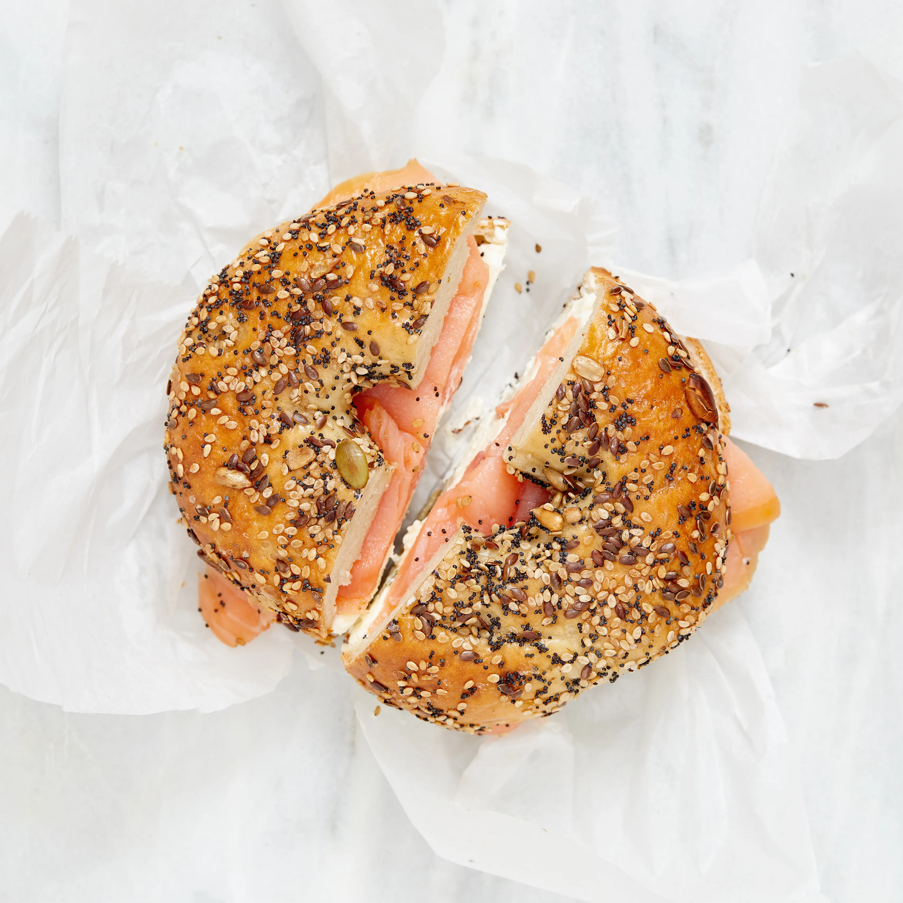

Welcome
“Experience the Empire State of New York, known for its powerful energy, historic charm, and vibrant communities. Whether you’re drawn to world-famous landmarks or quiet scenic escapes, New York reveals a dynamic blend of tradition, culture, and modern life.”
Top Attractions
-
Times Square
Today, Times Square is regarded as the center of New York. With its massive, lit advertising hoardings, it has evolved into a symbol of this energetic city throughout time—the star of numerous films!

-
Empire State Building
Completed in 1931 in New York City, the 102-story steel-framed Empire State Building was the world's tallest structure until 1971. The Empire State Building is situated on Fifth Avenue at 34th Street in Midtown Manhattan. One of the greatest instances of Modernist Art Deco architecture, it continues to be one of the most notable and unique structures in the United States.

-
Central Park
The biggest and most significant public park in Manhattan, New York City, is Central Park. It stretches between Fifth and Eighth avenues (approximately 0.5 miles [0.8 km]) and between 59th and 110th streets (about 2.5 miles [4 km]), covering an area of 840 acres (340 hectares). It was among the earliest parks in America created with landscape architecture.

Famous Food
-
New York Style Pizaa
Pizza is at the top of the list for a reason: you can't avoid it. A slice of thin, crispy crust with mozzarella cheese and basic tomato sauce on top is a must-have when visiting New York City. Even eating on the run is made possible by the large, foldable pieces.

-
New York Style Bagels
New York City is home to many well-known cuisines. Bagels are the mainstay of breakfast, while pizza may take the place of lunch. Legend has it that the water used to boil New York bagels gives them their distinctive flavor and texture.
 -
New York Style Hot Dogs
The hot dog is another mainstay of New York's street food culture. They can be seen practically everywhere in the city. Topped with mustard, ketchup, and caramelized onion, the sausage—typically made of beef, pork, or a combination—is sandwiched between soft buns.

The Culture of New York
-
New York Style Pizaa
Pizza is at the top of the list for a reason: you can't avoid it. A slice of thin, crispy crust with mozzarella cheese and basic tomato sauce on top is a must-have when visiting New York City. Even eating on the run is made possible by the large, foldable pieces.
-
New York Style Bagels
New York City is home to many well-known cuisines. Bagels are the mainstay of breakfast, while pizza may take the place of lunch. Legend has it that the water used to boil New York bagels gives them their distinctive flavor and texture.
-
New York Style Hot Dogs
The hot dog is another mainstay of New York's street food culture. They can be seen practically everywhere in the city. Topped with mustard, ketchup, and caramelized onion, the sausage—typically made of beef, pork, or a combination—is sandwiched between soft buns.